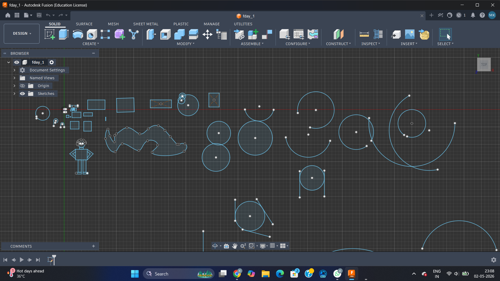
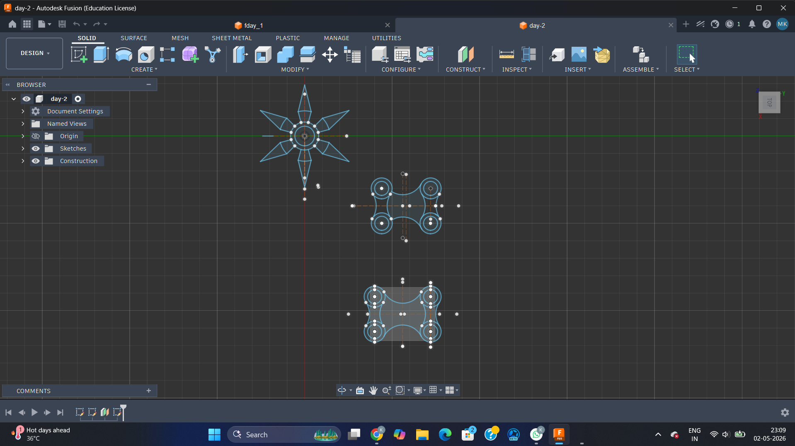
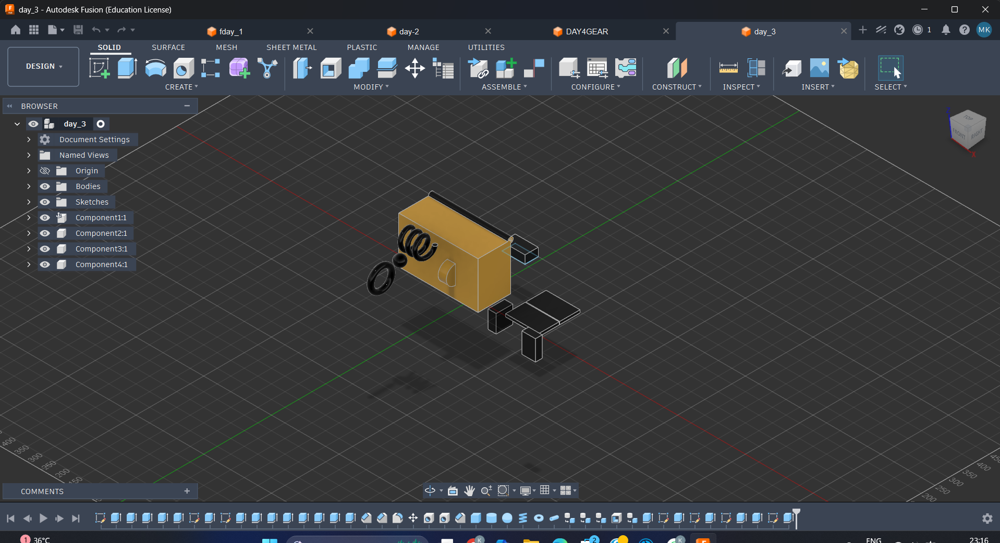
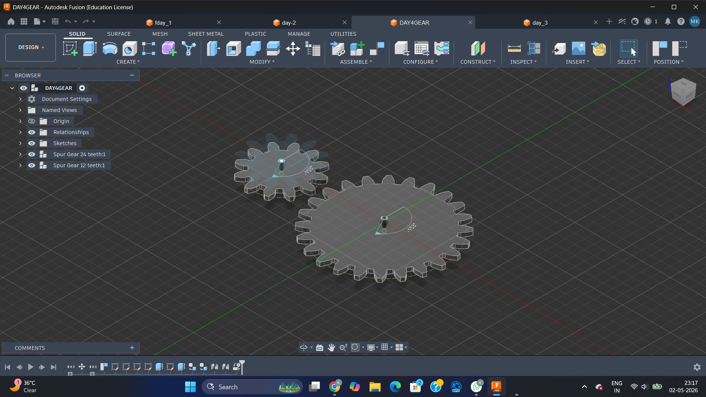
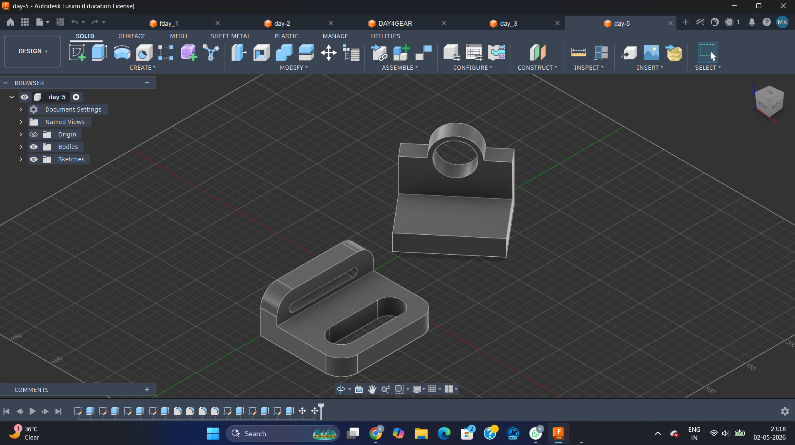
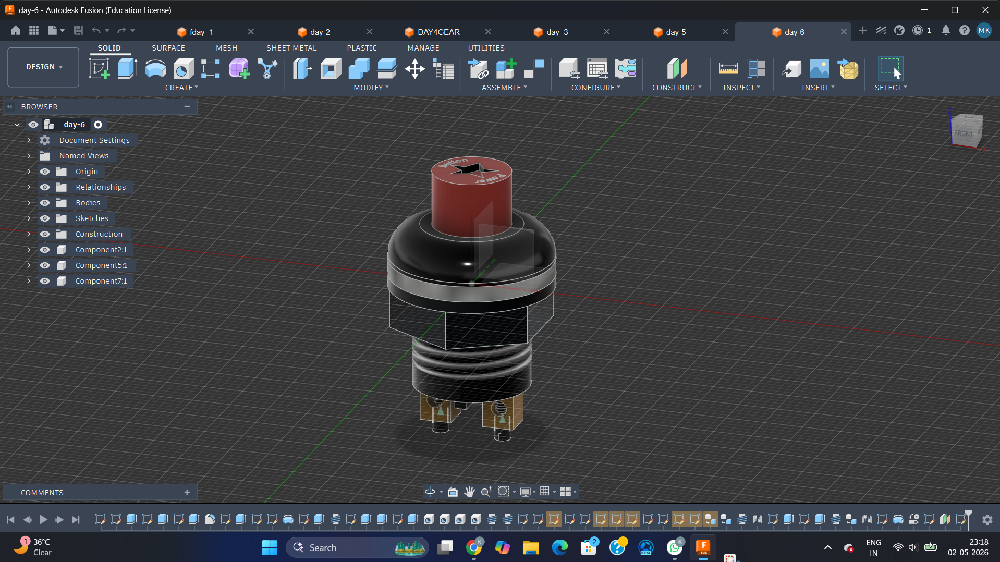

Fusion 360 7 Days
Day 1
Basic Shapes And Sketching

Started with the Fusion 360 interface and practiced drawing basic 2D shapes — rectangles, circles, splines and freehand curves. Also sketched a small robot character to get comfortable with the sketch tools.
Day 2
Modify Tools Practice

Practiced Fillet, Offset and pattern-based sketches. Created a star shape and symmetric bracket designs using mirror and circular pattern tools to understand how modify tools work in 2D.
Day 3
3D Bodies — Extrude & Join

Moved from 2D to 3D — used Extrude to give depth to sketches. Practiced Join Body, Cut Body and creating separate New Bodies. Built a small multi-component 3D assembly with a spring-like part.
Day 4
3D Gear Design

Designed two Spur Gears — one with 24 teeth and one with 12 teeth — using Fusion 360's gear generator. Understood gear ratios, tooth profiles and how meshing gears work in mechanical design.
Day 5
3D Practice Models

Practiced making real-looking mechanical parts — a bracket with a circular hole and a slot-cut bracket. Focused on using extrude, cut, and fillet together to produce clean finished models.
Day 6
Mini Project — Power Button

Built a detailed Power Button as a mini project — modeled the button cap, body, threaded section, and pin connectors as separate components and assembled them into a single realistic model.
Day 7

To Do list